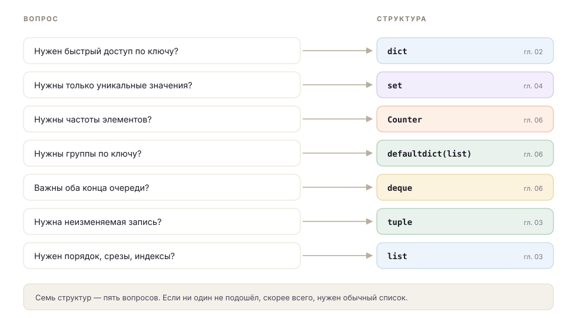

Карта коллекций: что выбрать и почему Пять вопросов, которые заменяют запоминание семи структур
Не нужно держать в голове все методы всех коллекций. Достаточно задать пять вопросов о задаче — и карта сама покажет структуру. Эта глава — оглавление недели и инструмент выбора, к которому вы будете возвращаться.
01Зачем эта глава
В Python семь основных структур, и почти все они — вариации двух идей: массив и хеш-таблица. Разница между «работает» и «работает быстро» — это выбор структуры под задачу, а не знание всех методов.
- Выбор структуры задаёт сложность. Проверка входа по списку — O(n), по множеству — O(1). На миллионе элементов это разница в тысячи раз.
- Это первый вопрос на собеседовании. «Как бы вы это решили?» — и ожидается не код, а выбор структуры и объяснение цены.
- Это карта курса. Главы 02–06 — подробности про каждую структуру; здесь — связи между ними и порядок чтения.
02Ассоциация-якорь: карта, а не список дорог
Вы не запоминаете все улицы — вы пользуетесь картой. Навигатору достаточно знать, куда вы хотите попасть: «нужен доступ по ключу» — и он показывает структуру.
Пять вопросов — это пять развилок карты. Пройдя их, вы почти всегда попадаете в нужную структуру без перебора вариантов.
03Карта выбора

Важно: карта не заменяет понимание. Она отвечает на вопрос «что взять», но не «почему это работает». Ответы на «почему» — в главах 02–06, и они построены так, что каждая следующая опирается на предыдущую.
04Пять вопросов с примерами
1. Нужен доступ по ключу?
Если данные — это пары «имя → значение», берите dict. Поиск, проверка наличия и обновление — всё O(1).
prices = {"apple": 120, "pear": 90}
prices.get("apple") # 120
"pear" in prices # True, без исключения
2. Нужны только уникальные значения?
Если важен сам факт «есть или нет», а порядок не нужен, — set. Дедупликация и пересечения за один шаг.
tags = {"python", "sql", "python"} # {'python', 'sql'}
u1, u2 = {"python", "sql"}, {"sql", "dbt"}
u1 & u2 # {'sql'}
3. Нужен порядок, срезы и индексы?
Если данные — это последовательность, берите list. Если последовательность не должна меняться — tuple: он компактнее и может быть ключом.
rows = [10, 20, 30] rows[:2] # [10, 20] — копия point = (10, 20) # неизменяемо, годится в ключ
4. Нужны частоты или группы?
Считать вхождения — Counter. Раскладывать по ключам — defaultdict(list). Оба — надстройки над dict, обе экономят по пять строк на задачу.
from collections import Counter, defaultdict
Counter("abracadabra").most_common(2) # [('a', 5), ('b', 2)]
groups = defaultdict(list)
groups["Anna"].append(1200)
5. Важны оба конца очереди?
Если добавляете и забираете с двух сторон — deque. У списка левый край O(n), у deque — O(1).
from collections import deque queue = deque([1, 2, 3]) queue.appendleft(0) # O(1), в отличие от list.insert(0) queue.popleft() # 0
05Сводная таблица
| Структура | Отвечает на вопрос | Вход | Порядок | Глава |
|---|---|---|---|---|
| list | последовательность, срезы | O(1) по индексу | вставки | 03 |
| tuple | неизменяемая запись | O(1) по индексу | вставки | 03 |
| dict | ключ → значение | O(1) в среднем | вставки | 02 |
| set | уникальность | O(1) в среднем | не гарантирован | 04 |
| Counter | частоты | O(1) в среднем | вставки | 06 |
| defaultdict | группы по ключу | O(1) в среднем | вставки | 06 |
| deque | очередь с двух концов | O(1) с краёв, O(n) в середине | вставки | 06 |
06Как пройти неделю
Пять занятий по 40 минут — по одному на главу 02–06, плюс диагностика на входе. Если тема не укладывается, добавляйте занятие, а не переходите дальше.
Самостоятельно решить 5 задач на список словарей — найти дорогие заказы, уникальных пользователей, количество и сумму по каждому, пользователя с максимальной суммой, — не используя pandas. Разбор этой практики есть в главах 02 и 06, а проверить себя можно диагностикой.
07Пять ошибок выбора
if x in users_list внутри цикла — O(n²). На 10 000 элементов это уже больно.
set и проверять по нему.Хранить {"python": True, "sql": True} ради уникальности — лишняя память и лишние значения.
set.Пять строк с get и +1 там, где хватает одной.
Counter(iterable), most_common(n).pop(0) и insert(0, x) сдвигают весь массив — O(n) на операцию.
deque: appendleft/popleft за O(1).Если поля будут меняться, tuple заставит пересоздавать объект на каждое изменение.
dataclass; tuple — для фиксированных записей.